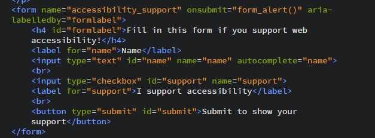

Introduction
This is the accessible example of a website. You will notice that the visual look of the website is very similar to the inaccessible example. A lot of the text on the pages will also be very similar to keep the focus on the differences in accessibility. The differences are in the underlying code of the website and will become obvious if you start exploring the website using the screen reader. In this example you should be able to access all areas and get useful information using just the screen reader and keyboard.
Semantic HTML Elements
Using a semantic HTML element means that the HTML element you use properly describes what the content inside the element is. To be a good semantic element in any situation, an element needs to be descriptive enough to be useful and the content needs to fit the description. If you use a semantic element in the wrong context it is no longer useful. Semantic elements help screen reader users navigate the content more easily. In the inaccessible example the structure of the website is mostly done using the "div" tag, which isn't very descriptive. It also uses the "nav" tag in a place where it doesn't fit, which makes the page more confusing to navigate if you can't see what's going on. In contrast, on this page the structure is made using the "header", "nav", "main" and "article" tags. Using headings from "h1" to "h6" in the right order, starting from the beginning also makes the page easier to navigate. One quick way to get an idea of the structure and content of a page is to check out all the headings when you first access a page.
Alt tags, Labels and ARIA-attributes

Alt tags, labels and ARIA-labels are all ways to give audible labels to items, that may or may not be clear to visual users. They should be used to clarify items that are important to understanding what is going on. Alt tags are mainly used to provide alternative text to images. The text in the alt tags should primarily be useful for users instead of mainly being descriptive. For example if a search button has an image of a magnifying glass and no text inside it the alt tag should be "search" or something similar instead of "image of a magnifying glass". That way users will hear the function of the image, instead of a useless description. Images that are purely decoration and do not add any information to the website can be left with empty alt tags so that screen readers ignore them. The image above is an example of this. If these kinds of images are described in detail, it can be completely out of context and confusing for anybody listening. If an image does show relevant content or add any information that isn't given in the text the information should be provided in the alt text. On this page the alt text should help you get the information you need.
Labels are used within forms to describe which input is related to what. They are useful for both sighted and nonsighted users to understand what different form fields mean and should usually be visually placed near the field that they are describing. Labels should always be related to the field that they are describing using the "for" attribute in the HTML. On this page the form should be well labeled so that you know how to fill in the form.

ARIA-attributes are specific accessibility attributes that can help describe different HTML elements to screen readers and other technology. There are many different ARIA-attributes that have different functions, but some of the main ones are ARIA-labels and ARIA-roles. They can be used to label items that aren't supported by the alt tags and labels and they can be used to explain additional functionality. For example if there is a section that can be expanded and ARIA-tag could describe if it is currently expanded or not. On this page there is an ARIA-attribute in the navigation called ARIA-expanded, which explains if the submenu is expanded or not. This attribute changes values using JavaScript when the button to expand the submenu is clicked.
Good Names for Links and Buttons
It is important to have good names for links and buttons. People using screenreaders and people who use keyboards to navigate webpages often tab through links to access them so the context around the link can go missing. If the title of a link or button is just "link" or "click here" users won't know where the link will go without having to search through the text to find the link. Links and buttons with images also run into this problem, especially if they don't have any alt text. If the name inside the link or button tells the user what will happen when they click it, then users are a lot more likely to try it. If you tab through the links and buttons on this page the linke titles should all give you at least a basic idea of what will happen if you click on them or press enter.